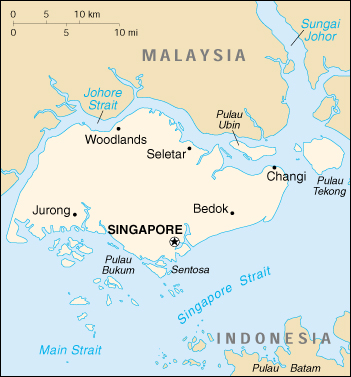

|
Singapore | |
| Introduction Geography People Government Economy Communications Transportation Military Transnational Issues | ||
|  | ||
| Singapore | Introduction | Top of Page |
| Background: | Founded as a British trading colony in 1819, Singapore joined Malaysia in 1963, but withdrew two years later and became independent. It subsequently became one of the world's most prosperous countries, with strong international trading links (its port is one of the world's busiest) and with per capita GDP above that of the leading nations of Western Europe. |
| Singapore | Geography | Top of Page |
| Location: | Southeastern Asia, islands between Malaysia and Indonesia |
| Geographic coordinates: | 1 22 N, 103 48 E |
| Map references: | Southeast Asia |
| Area: |
total:
647.5 sq km
land: 637.5 sq km water: 10 sq km |
| Area - comparative: | slightly more than 3.5 times the size of Washington, DC |
| Land boundaries: | 0 km |
| Coastline: | 193 km |
| Maritime claims: |
exclusive fishing zone:
within and beyond territorial sea, as defined in treaties and practice
territorial sea: 3 NM |
| Climate: | tropical; hot, humid, rainy; two distinct monsoon seasons - Northeastern monsoon from December to March and Southwestern monsoon from June to September; inter-monsoon - frequent afternoon and early evening thunderstorms |
| Terrain: | lowland; gently undulating central plateau contains water catchment area and nature preserve |
| Elevation extremes: |
lowest point:
Singapore Strait 0 m
highest point: Bukit Timah 166 m |
| Natural resources: | fish, deepwater ports |
| Land use: |
arable land:
2%
permanent crops: 6% permanent pastures: 0% forests and woodland: 5% other: 87% (1993 est.) |
| Irrigated land: | NA sq km |
| Natural hazards: | NA |
| Environment - current issues: | industrial pollution; limited natural fresh water resources; limited land availability presents waste disposal problems; seasonal smoke/haze resulting from forest fires in Indonesia |
| Environment - international agreements: |
party to:
Biodiversity, Climate Change, Desertification, Endangered Species, Hazardous Wastes, Law of the Sea, Nuclear Test Ban, Ozone Layer Protection, Ship Pollution
signed, but not ratified: none of the selected agreements |
| Geography - note: | focal point for Southeast Asian sea routes |
| Singapore | People | Top of Page |
| Population: | 4,300,419 (July 2001 est.) |
| Age structure: |
0-14 years:
17.89% (male 397,124; female 372,058)
15-64 years: 75.16% (male 1,575,381; female 1,656,838) 65 years and over: 6.95% (male 130,815; female 168,203) (2001 est.) |
| Population growth rate: | 3.5% (2001 est.) |
| Birth rate: | 12.8 births/1,000 population (2001 est.) |
| Death rate: | 4.24 deaths/1,000 population (2001 est.) |
| Net migration rate: | 26.45 migrant(s)/1,000 population (2001 est.) |
| Sex ratio: |
at birth:
1.08 male(s)/female
under 15 years: 1.07 male(s)/female 15-64 years: 0.95 male(s)/female 65 years and over: 0.78 male(s)/female total population: 0.96 male(s)/female (2001 est.) |
| Infant mortality rate: | 3.62 deaths/1,000 live births (2001 est.) |
| Life expectancy at birth: |
total population:
80.17 years
male: 77.22 years female: 83.35 years (2001 est.) |
| Total fertility rate: | 1.22 children born/woman (2001 est.) |
| HIV/AIDS - adult prevalence rate: | 0.19% (1999 est.) |
| HIV/AIDS - people living with HIV/AIDS: | 4,000 (1999 est.) |
| HIV/AIDS - deaths: | 210 (1999 est.) |
| Nationality: |
noun:
Singaporean(s)
adjective: Singapore |
| Ethnic groups: | Chinese 76.7%, Malay 14%, Indian 7.9%, other 1.4% |
| Religions: | Buddhist (Chinese), Muslim (Malays), Christian, Hindu, Sikh, Taoist, Confucianist |
| Languages: | Chinese (official), Malay (official and national), Tamil (official), English (official) |
| Literacy: |
definition:
age 15 and over can read and write
total population: 93.5% male: 97% female: 89.8% (1999) |
| Singapore | Government | Top of Page |
| Country name: |
conventional long form:
Republic of Singapore
conventional short form: Singapore |
| Government type: | parliamentary republic |
| Capital: | Singapore |
| Administrative divisions: | none |
| Independence: | 9 August 1965 (from Malaysia) |
| National holiday: | Independence Day, 9 August (1965) |
| Constitution: | 3 June 1959, amended 1965 (based on preindependence State of Singapore Constitution) |
| Legal system: | based on English common law; has not accepted compulsory ICJ jurisdiction |
| Suffrage: | 21 years of age; universal and compulsory |
| Executive branch: |
chief of state:
President Sellapan Rama (S. R.) NATHAN (since 1 September 1999)
head of government: Prime Minister GOH Chok Tong (since 28 November 1990) and Deputy Prime Ministers LEE Hsien Loong (since 28 November 1990) and Tony TAN Keng Yam (since 1 August 1995) cabinet: Cabinet appointed by the president, responsible to Parliament elections: president elected by popular vote for a six-year term; election last held 28 August 1999 (next to be held NA August 2005); following legislative elections, the leader of the majority party or the leader of a majority coalition is usually appointed prime minister by the president; deputy prime ministers appointed by the president election results: Sellapan Rama (S. R.) NATHAN elected president unopposed |
| Legislative branch: |
unicameral Parliament (83 seats; members elected by popular vote to serve five-year terms)
elections: last held 2 January 1997 (next to be held by 26 August 2002) election results: percent of vote by party - PAP 65% (in contested constituencies), other 35%; seats by party - PAP 81, WP 1, SPP 1; note - subsequent to the election, there was a change in the distribution of seats, the new distribution is as follows: PAP 80, WP 1, SPP 1, vacant 1 |
| Judicial branch: | Supreme Court (chief justice is appointed by the president with the advice of the prime minister, other judges are appointed by the president with the advice of the chief justice); Court of Appeals |
| Political parties and leaders: | People's Action Party or PAP [GOH Chok Tong, secretary general] - the governing party; Singapore Democratic Party or SDP [CHEE Soon Juan]; Singapore People's Party or SPP [CHIAM See Tong]; Workers' Party or WP [J. B. JEYARETNAM] |
| Political pressure groups and leaders: | NA |
| International organization participation: | APEC, ARF, AsDB, ASEAN, Australia Group (observer), BIS, C, CCC, CP, ESCAP, G-77, IAEA, IBRD, ICAO, ICC, ICFTU, ICRM, IFC, IFRCS, IHO, ILO, IMF, IMO, Inmarsat, Intelsat, Interpol, IOC, ISO, ITU, NAM, OPCW, PCA, UN, UN Security Council (temporary), UNCTAD, UNIKOM, UNMEE, UNTAET, UPU, WHO, WIPO, WMO, WTrO |
| Diplomatic representation in the US: |
chief of mission:
Ambassador CHAN Heng Chee
chancery: 3501 International Place NW, Washington, DC 20008 telephone: [1] (202) 537-3100 FAX: [1] (202) 537-0876 consulate(s) general: Los Angeles, San Francisco consulate(s): New York |
| Diplomatic representation from the US: |
chief of mission:
Ambassador (vacant)
embassy: 27 Napier Road, Singapore 258508 mailing address: PSC Box 470, FPO AP 96534-0001 telephone: [65] 476-9100 FAX: [65] 476-9340 |
| Flag description: | two equal horizontal bands of red (top) and white; near the hoist side of the red band, there is a vertical, white crescent (closed portion is toward the hoist side) partially enclosing five white five-pointed stars arranged in a circle |
| Singapore | Economy | Top of Page |
| Economy - overview: | Singapore is blessed with a highly developed and successful free-market economy, a remarkably open and corruption-free business environment, stable prices, and the fifth highest per capita GDP in the world. Exports, particularly in electronics and chemicals, and services are the main drivers of the economy. Mainly because of robust exports, especially electronic goods, the economy grew 10.1% in 2000. Forecasters, however, are projecting only 4%-6% growth in 2001 largely because of weaker global demand, especially in the US. The government promotes high levels of savings and investment through a mandatory savings scheme and spends heavily in education and technology. It also owns government-linked companies (GLCs) - particularly in manufacturing - that operate as commercial entities. As Singapore looks to a future increasingly marked by globalization, the country is positioning itself as the region's financial and high-tech hub. |
| GDP: | purchasing power parity - $109.8 billion (2000 est.) |
| GDP - real growth rate: | 10.1% (2000 est.) |
| GDP - per capita: | purchasing power parity - $26,500 (2000 est.) |
| GDP - composition by sector: |
agriculture:
NEGL%
industry: 30% services: 70% |
| Population below poverty line: | NA% |
| Household income or consumption by percentage share: |
lowest 10%:
NA%
highest 10%: NA% |
| Inflation rate (consumer prices): | 1.4% (2000) |
| Labor force: | 2.1 million (2000) |
| Labor force - by occupation: | financial, business, and other services 35%, manufacturing 21%, construction 13%, transportation and communication 9% |
| Unemployment rate: | 3% (2000 est.) |
| Budget: |
revenues:
$18.1 billion
expenditures: $17.1 billion, including capital expenditures of $9.5 billion (FY99/00 est.) |
| Industries: | electronics, chemicals, financial services, oil drilling equipment, petroleum refining, rubber processing and rubber products, processed food and beverages, ship repair, entrepot trade, biotechnology |
| Industrial production growth rate: | 14% (2000 est.) |
| Electricity - production: | 27.381 billion kWh (1999) |
| Electricity - production by source: |
fossil fuel:
100%
hydro: 0% nuclear: 0% other: 0% (1999) |
| Electricity - consumption: | 25.464 billion kWh (1999) |
| Electricity - exports: | 0 kWh (1999) |
| Electricity - imports: | 0 kWh (1999) |
| Agriculture - products: | rubber, copra, fruit, orchids, vegetables; poultry, eggs, fish, ornamental fish |
| Exports: | $137 billion (f.o.b., 2000) |
| Exports - commodities: | machinery and equipment (including electronics), chemicals, mineral fuels |
| Exports - partners: | US 19%, Malaysia 17%, Hong Kong 8%, Japan 7%, Taiwan 5%, Thailand 4%, UK 4%, Netherlands 3.8%, China 3%, South Korea 3%, Germany 3% (1999) |
| Imports: | $127 billion (f.o.b., 2000) |
| Imports - commodities: | machinery and equipment, mineral fuels, chemicals, foodstuffs |
| Imports - partners: | US 17%, Japan 17%, Malaysia 16%, Thailand 5%, China 5%, Taiwan 4%, Germany 3%, Saudi Arabia 3% (1999) |
| Debt - external: | $9.7 billion (2000) |
| Economic aid - recipient: | $NA |
| Currency: | Singapore dollar (SGD) |
| Currency code: | SGD |
| Exchange rates: | Singapore dollars per US dollar - 1.7365 (January 2001), 1.7240 (2000), 1.6950 (1999), 1.6736 (1998), 1.4848 (1997), 1.4100 (1996) |
| Fiscal year: | 1 April - 31 March |
| Singapore | Communications | Top of Page |
| Telephones - main lines in use: | 1.928 million (November 2000) |
| Telephones - mobile cellular: | 2.333 million (November 2000) |
| Telephone system: |
general assessment:
major consideration given to serving business interests; excellent international service
domestic: excellent domestic facilities international: submarine cables to Malaysia (Sabah and Peninsular Malaysia), Indonesia, and the Philippines; satellite earth stations - 2 Intelsat (1 Indian Ocean and 1 Pacific Ocean), and 1 Inmarsat (Pacific Ocean region) |
| Radio broadcast stations: | AM 0, FM 16, shortwave 2 (1998) |
| Radios: | 2.6 million (2000) |
| Television broadcast stations: | 6 (2000) |
| Televisions: | 1.33 million (1997) |
| Internet country code: | .sg |
| Internet Service Providers (ISPs): | 9 (2000) |
| Internet users: | 1.74 million (2000) |
| Singapore | Transportation | Top of Page |
| Railways: |
total:
38.6 km
narrow gauge: 38.6 km 1.000-m gauge note: there is a 83 km mass transit system with 48 stations |
| Highways: |
total:
3,150 km
paved: 3,066 km (including 150 km of expressways) unpaved: 84 km (2000) |
| Waterways: | none |
| Ports and harbors: | Singapore |
| Merchant marine: |
total:
879 ships (1,000 GRT or over) totaling 20,849,168 GRT/33,215,317 DWT
ships by type: bulk 134, cargo 111, chemical tanker 63, combination bulk 10, combination ore/oil 6, container 167, liquefied gas 28, livestock carrier 2, multi-functional large-load carrier 4, passenger 1, petroleum tanker 295, refrigerated cargo 7, roll on/roll off 7, short-sea passenger 1, specialized tanker 10, vehicle carrier 33 note: includes some foreign-owned ships registered here as a flag of convenience: Australia 1, Bermuda 12, Belgium 6, China 9, Denmark 29, Germany 8, Greece 1, Hong Kong 20, Indonesia 9, Japan 32, South Korea 3, Netherlands 2, Norway 9, Russia 1, Sweden 22, Thailand 22, Taiwan 17, UK 3, US 10 (2000 est.) |
| Airports: | 9 (2000 est.) |
| Airports - with paved runways: |
total:
9
over 3,047 m: 2 2,438 to 3,047 m: 1 1,524 to 2,437 m: 4 914 to 1,523 m: 1 under 914 m: 1 (2000 est.) |
| Heliports: | 1 (2000 est.) |
| Singapore | Military | Top of Page |
| Military branches: | Army, Navy, Air Force, People's Defense Force, Police Force |
| Military manpower - availability: | males age 15-49: 1,316,815 (2001 est.) |
| Military manpower - fit for military service: | males age 15-49: 959,636 (2001 est.) |
| Military expenditures - dollar figure: | $5 billion (FY00/01 est.) |
| Military expenditures - percent of GDP: | 4.5% (FY00/01 est.) |
| Singapore | Transnational Issues | Top of Page |
| Disputes - international: | Pedra Branca Island (Pulau Batu Putih) disputed with Malaysia |
| Illicit drugs: | as a transportation and financial services hub, Singapore is vulnerable, despite strict laws and enforcement, to use as a transit point for Golden Triangle heroin and as a venue for money laundering |
{kind=link}
{kind=link}